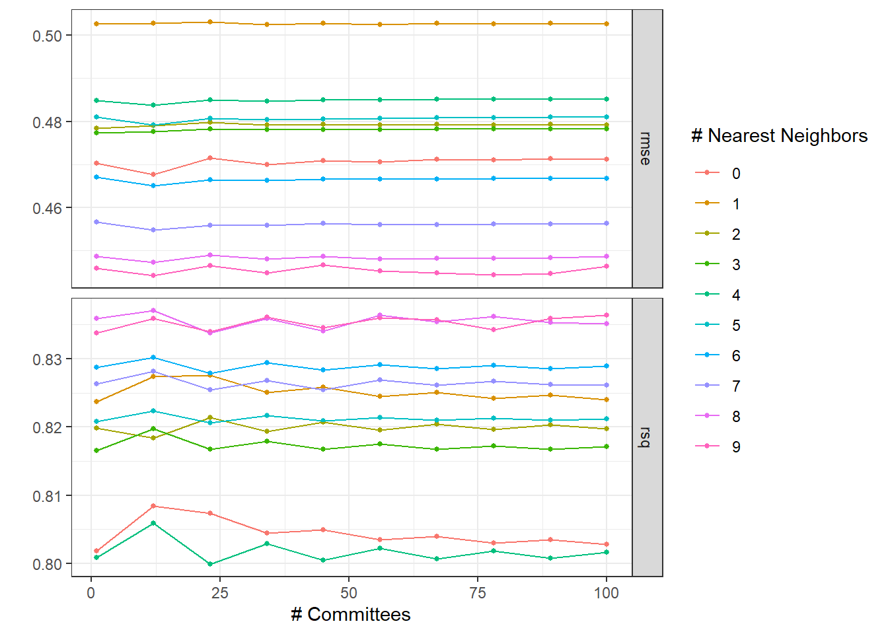
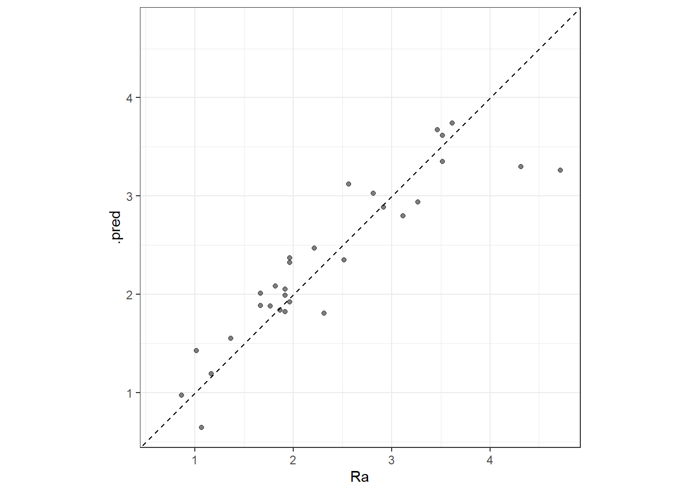
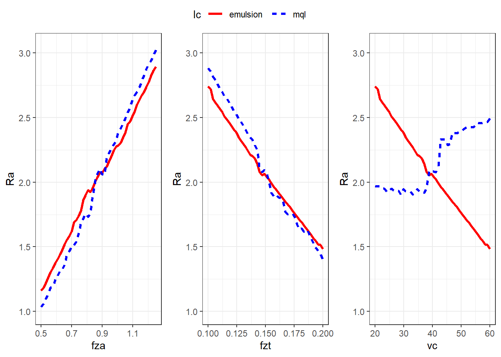
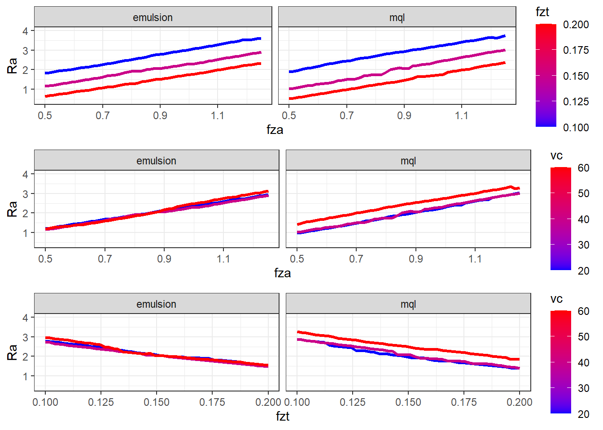
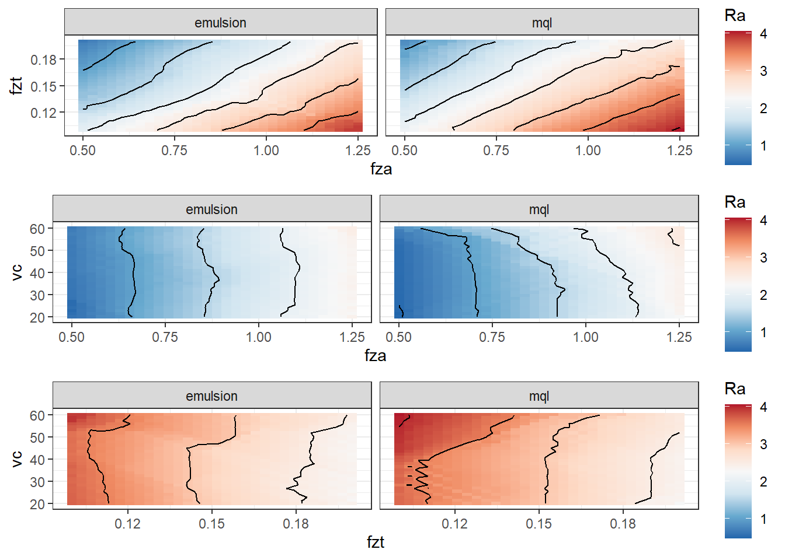
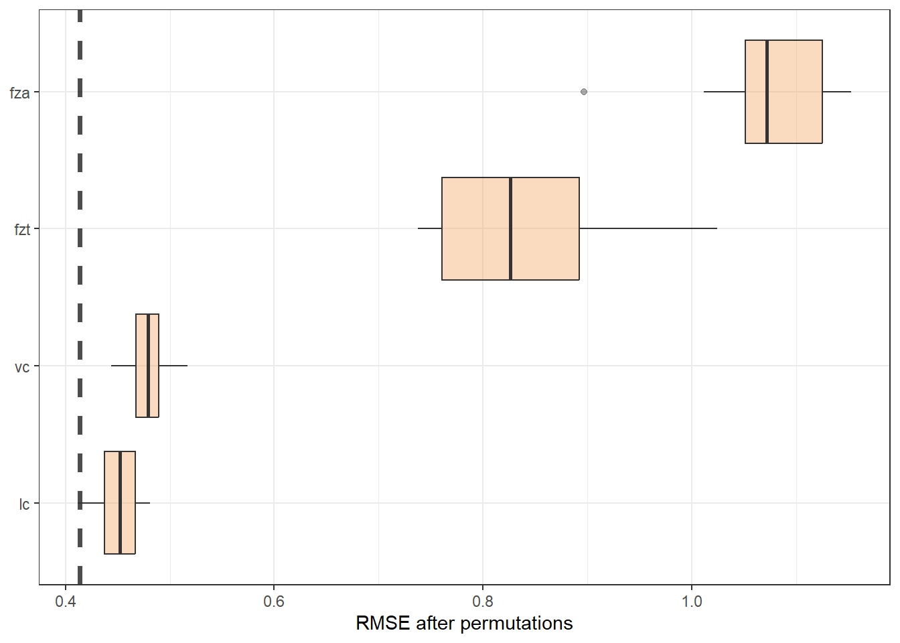

fza fzt vc lc Ra
1 0.50 0.10 40 emulsion 1.915556
2 1.25 0.10 40 emulsion 3.515556
3 0.50 0.20 40 emulsion 1.065556
4 1.25 0.20 40 emulsion 1.965556
5 0.50 0.15 20 emulsion 1.765556
6 1.25 0.15 20 emulsion 3.265556Ra modeling with Cubist - Helical milling of Inconel 718 with round carbide inserts
Loading libraries, defining experimental design, and getting measurement results.
The same as done previously.
Tuning best model again with a wider grid
The best model was the SVM radial. Tuning with a wider grid is performed to improve model performance. A regular grid of 10 values of both cost and \(\sigma\) is considered.
normalized_rec <-
recipe(Ra ~ ., data = plan_train) %>%
step_normalize(fza,fzt,vc) %>%
step_dummy(all_nominal_predictors())
cubist_spec <-
cubist_rules(committees = tune(), neighbors = tune()) %>%
set_engine("Cubist")
cubist_wflow <-
workflow() %>%
add_model(cubist_spec) %>%
add_recipe(normalized_rec)
p <- parameters(committees(), neighbors(c(0,9)))
param_grid <- grid_regular(p, levels = 10)
tune_res1 <- tune_grid(
cubist_wflow,
resamples = plan_folds,
grid = param_grid
)Plotting the hyperparameter tuning results.
autoplot(tune_res1) + theme_bw()
Sorting models considering RMSE.
collect_metrics(tune_res1) %>%
arrange(mean)# A tibble: 200 × 8
committees neighbors .metric .estimator mean n std_err .config
<int> <int> <chr> <chr> <dbl> <int> <dbl> <chr>
1 12 9 rmse standard 0.444 20 0.0645 Preprocessor1_Mo…
2 78 9 rmse standard 0.444 20 0.0645 Preprocessor1_Mo…
3 89 9 rmse standard 0.445 20 0.0644 Preprocessor1_Mo…
4 67 9 rmse standard 0.445 20 0.0644 Preprocessor1_Mo…
5 34 9 rmse standard 0.445 20 0.0644 Preprocessor1_Mo…
6 56 9 rmse standard 0.445 20 0.0643 Preprocessor1_Mo…
7 1 9 rmse standard 0.446 20 0.0643 Preprocessor1_Mo…
8 100 9 rmse standard 0.446 20 0.0642 Preprocessor1_Mo…
9 23 9 rmse standard 0.446 20 0.0642 Preprocessor1_Mo…
10 45 9 rmse standard 0.447 20 0.0642 Preprocessor1_Mo…
# ℹ 190 more rowsLocking to best models performance.
best_rmse <-
tune_res1 %>%
select_best(metric = "rmse")
best_rmse# A tibble: 1 × 3
committees neighbors .config
<int> <int> <chr>
1 12 9 Preprocessor1_Model020best_rsq <-
tune_res1 %>%
select_best(metric = "rsq")
best_rsq# A tibble: 1 × 3
committees neighbors .config
<int> <int> <chr>
1 12 8 Preprocessor1_Model019The best model considering RMSE is with comittees = 12 and neighboors = 9.
cubist_final <- finalize_workflow(cubist_wflow, best_rmse)
cubist_final_fit <- fit(cubist_final, data = plan_train)Final model is then defined with these parameters’ levels. The model is also applied in the test data.
augment(cubist_final_fit, new_data = plan_test) %>%
rsq(truth = Ra, estimate = .pred)# A tibble: 1 × 3
.metric .estimator .estimate
<chr> <chr> <dbl>
1 rsq standard 0.914augment(cubist_final_fit, new_data = plan_test) %>%
rmse(truth = Ra, estimate = .pred)# A tibble: 1 × 3
.metric .estimator .estimate
<chr> <chr> <dbl>
1 rmse standard 0.280Cubist model structure.
summary(cubist_final_fit$fit$fit$fit)
Call:
cubist.default(x = x, y = y, committees = 12L)
Cubist [Release 2.07 GPL Edition] Thu Nov 16 09:31:26 2023
---------------------------------
Target attribute `outcome'
Read 30 cases (5 attributes) from undefined.data
Model 1:
Rule 1/1: [30 cases, mean 2.3588889, range 0.8655556 to 4.715556, est err 0.4025470]
outcome = 2.2732842 + 0.691 fza - 0.443 fzt
Model 2:
Rule 2/1: [30 cases, mean 2.3588889, range 0.8655556 to 4.715556, est err 0.4023428]
outcome = 2.2718962 + 0.69 fza - 0.444 fzt
Model 3:
Rule 3/1: [30 cases, mean 2.3588889, range 0.8655556 to 4.715556, est err 0.4025469]
outcome = 2.2732841 + 0.691 fza - 0.443 fzt
Model 4:
Rule 4/1: [30 cases, mean 2.3588889, range 0.8655556 to 4.715556, est err 0.4023428]
outcome = 2.2718962 + 0.69 fza - 0.444 fzt
Model 5:
Rule 5/1: [30 cases, mean 2.3588889, range 0.8655556 to 4.715556, est err 0.4025469]
outcome = 2.2732841 + 0.691 fza - 0.443 fzt
Model 6:
Rule 6/1: [30 cases, mean 2.3588889, range 0.8655556 to 4.715556, est err 0.4023428]
outcome = 2.2718962 + 0.69 fza - 0.444 fzt
Model 7:
Rule 7/1: [30 cases, mean 2.3588889, range 0.8655556 to 4.715556, est err 0.4025469]
outcome = 2.2732841 + 0.691 fza - 0.443 fzt
Model 8:
Rule 8/1: [30 cases, mean 2.3588889, range 0.8655556 to 4.715556, est err 0.4023428]
outcome = 2.2718962 + 0.69 fza - 0.444 fzt
Model 9:
Rule 9/1: [30 cases, mean 2.3588889, range 0.8655556 to 4.715556, est err 0.4025469]
outcome = 2.2732841 + 0.691 fza - 0.443 fzt
Model 10:
Rule 10/1: [30 cases, mean 2.3588889, range 0.8655556 to 4.715556, est err 0.4023428]
outcome = 2.2718962 + 0.69 fza - 0.444 fzt
Model 11:
Rule 11/1: [30 cases, mean 2.3588889, range 0.8655556 to 4.715556, est err 0.4025469]
outcome = 2.2732841 + 0.691 fza - 0.443 fzt
Model 12:
Rule 12/1: [30 cases, mean 2.3588889, range 0.8655556 to 4.715556, est err 0.4023428]
outcome = 2.2718962 + 0.69 fza - 0.444 fzt
Evaluation on training data (30 cases):
Average |error| 0.3848325
Relative |error| 0.48
Correlation coefficient 0.77
Attribute usage:
Conds Model
100% fza
100% fzt
Time: 0.0 secs# library(Cubist)
# library(tidyrules)
#
# cubist_Ra <- cubist(x = plan_train[,1:4], y = plan_train[,5], committees = 12)
# summary(cubist_Ra)
#
# cubist_Ra$usage
# cubist_Ra$coefficients
# cubist_Ra$committees
# cubist_Ra$vars
#
# tidyRules(cubist_Ra) %>%
# select(RHS, committee)Evaluating the model in the whole training set
The model is evaluated in the whole training data set.
cubist_res <- predict(cubist_final_fit, new_data = plan_train %>% select(-Ra))
cubist_res <- bind_cols(cubist_res, plan_train %>% select(Ra))
head(cubist_res)# A tibble: 6 × 2
.pred Ra
<dbl> <dbl>
1 1.82 1.92
2 3.62 3.52
3 0.643 1.07
4 2.32 1.97
5 2.94 3.27
6 1.19 1.17ggplot(cubist_res, aes(x = Ra, y = .pred)) +
# Create a diagonal line:
geom_abline(lty = 2) +
geom_point(alpha = 0.5) +
coord_obs_pred() + theme_bw()
Model interpretation
Effects plots to interpret the model according to process aspects.
##########
x1_grid <- seq(min(plan_train$fza), max(plan_train$fza), length = 50)
ypred_fza_em <- predict(cubist_final_fit, new_data = data.frame(fza = x1_grid,
fzt = 0.15,
vc = 40,
lc = "emulsion"))
data_p1_em <- data.frame(fza = x1_grid,
Ra = ypred_fza_em$.pred,
fzt = 0.15,
vc = 40,
lc = "emulsion")
ypred_fza_mql <- predict(cubist_final_fit, new_data = data.frame(fza = x1_grid,
fzt = 0.15,
vc = 40,
lc = "mql"))
data_p1_mql <- data.frame(fza = x1_grid,
Ra = ypred_fza_mql$.pred,
fzt = 0.15,
vc = 40,
lc = "mql")
data_p1 <- rbind(data_p1_em, data_p1_mql)
p1 <- ggplot(data = data_p1, mapping = aes(x = fza, y = Ra, group = lc)) +
geom_line(aes(colour = lc, linetype = lc), linewidth = 1.2) +
ylim(1,3.05) +
scale_color_manual(values = c("red", "blue")) +
theme_bw()
##########
x2_grid <- seq(min(plan_train$fzt), max(plan_train$fzt), length = 50)
ypred_fzt_em <- predict(cubist_final_fit, new_data = data.frame(fza = 0.875,
fzt = x2_grid,
vc = 40,
lc = "emulsion"))
data_p2_em <- data.frame(fza = 0.875,
Ra = ypred_fzt_em$.pred,
fzt = x2_grid,
vc = 40,
lc = "emulsion")
ypred_fzt_mql <- predict(cubist_final_fit, new_data = data.frame(fza = 0.875,
fzt = x2_grid,
vc = 40,
lc = "mql"))
data_p2_mql <- data.frame(fza = 0.875,
Ra = ypred_fzt_mql$.pred,
fzt = x2_grid,
vc = 40,
lc = "mql")
data_p2 <- rbind(data_p2_em, data_p2_mql)
p2 <- ggplot(data = data_p2, mapping = aes(x = fzt, y = Ra, group = lc)) +
geom_line(aes(colour = lc, linetype = lc), linewidth = 1.2) +
ylim(1,3.05) +
scale_color_manual(values = c("red", "blue")) +
theme_bw()
##########
x3_grid <- seq(min(plan_train$vc), max(plan_train$vc), length = 50)
ypred_vc_em <- predict(cubist_final_fit, new_data = data.frame(fza = 0.875,
fzt = 0.15,
vc = x3_grid,
lc = "emulsion"))
data_p3_em <- data.frame(fza = 0.875,
Ra = ypred_fzt_em$.pred,
fzt = 0.15,
vc = x3_grid,
lc = "emulsion")
ypred_vc_mql <- predict(cubist_final_fit, new_data = data.frame(fza = 0.875,
fzt = 0.15,
vc = x3_grid,
lc = "mql"))
data_p3_mql <- data.frame(fza = 0.875,
Ra = ypred_vc_mql$.pred,
fzt = 0.15,
vc = x3_grid,
lc = "mql")
data_p3 <- rbind(data_p3_em, data_p3_mql)
p3 <- ggplot(data = data_p3, mapping = aes(x = vc, y = Ra, group = lc)) +
geom_line(aes(colour = lc, linetype = lc), linewidth = 1.2) +
ylim(1,3.05) +
scale_color_manual(values = c("red", "blue")) +
theme_bw()
ggarrange(p1 , p2, p3, common.legend = T, nrow = 1)
ypred_fza_em_a <- predict(cubist_final_fit, new_data = data.frame(fza = x1_grid,
fzt = 0.1,
vc = 40,
lc = "emulsion"))
data_p1_em_a <- data.frame(fza = x1_grid,
Ra = ypred_fza_em_a$.pred,
fzt = 0.1,
vc = 40,
lc = "emulsion")
ypred_fza_mql_a <- predict(cubist_final_fit, new_data = data.frame(fza = x1_grid,
fzt = 0.1,
vc = 40,
lc = "mql"))
data_p1_mql_a <- data.frame(fza = x1_grid,
Ra = ypred_fza_mql_a$.pred,
fzt = 0.1,
vc = 40,
lc = "mql")
ypred_fza_em_b <- predict(cubist_final_fit, new_data = data.frame(fza = x1_grid,
fzt = 0.2,
vc = 40,
lc = "emulsion"))
data_p1_em_b <- data.frame(fza = x1_grid,
Ra = ypred_fza_em_b$.pred,
fzt = 0.2,
vc = 40,
lc = "emulsion")
ypred_fza_mql_b <- predict(cubist_final_fit, new_data = data.frame(fza = x1_grid,
fzt = 0.2,
vc = 40,
lc = "mql"))
data_p1_mql_b <- data.frame(fza = x1_grid,
Ra = ypred_fza_mql_b$.pred,
fzt = 0.2,
vc = 40,
lc = "mql")
data_p1_fza_fzt <- rbind(data_p1, data_p1_em_a, data_p1_mql_a,
data_p1_em_b, data_p1_mql_b)
pp12 <- ggplot(data_p1_fza_fzt, aes(y = Ra, x = fza, group = fzt)) +
geom_line(aes(color = fzt), linewidth = 1.2) +
# scale_fill_binned(type = "viridis") +
scale_color_gradient(low="blue", high="red") +
facet_grid(cols = vars(lc), scales = "free") +
ylim(.4,4) +
theme_bw()ypred_fza_em_c <- predict(cubist_final_fit, new_data = data.frame(fza = x1_grid,
fzt = 0.15,
vc = 20,
lc = "emulsion"))
data_p1_em_c <- data.frame(fza = x1_grid,
Ra = ypred_fza_em_c$.pred,
fzt = 0.15,
vc = 20,
lc = "emulsion")
ypred_fza_mql_c <- predict(cubist_final_fit, new_data = data.frame(fza = x1_grid,
fzt = 0.15,
vc = 20,
lc = "mql"))
data_p1_mql_c <- data.frame(fza = x1_grid,
Ra = ypred_fza_mql_c$.pred,
fzt = 0.15,
vc = 20,
lc = "mql")
ypred_fza_em_d <- predict(cubist_final_fit, new_data = data.frame(fza = x1_grid,
fzt = 0.15,
vc = 60,
lc = "emulsion"))
data_p1_em_d <- data.frame(fza = x1_grid,
Ra = ypred_fza_em_d$.pred,
fzt = 0.15,
vc = 60,
lc = "emulsion")
ypred_fza_mql_d <- predict(cubist_final_fit, new_data = data.frame(fza = x1_grid,
fzt = 0.15,
vc = 60,
lc = "mql"))
data_p1_mql_d <- data.frame(fza = x1_grid,
Ra = ypred_fza_mql_d$.pred,
fzt = 0.15,
vc = 60,
lc = "mql")
data_p1_fza_vc <- rbind(data_p1, data_p1_em_c, data_p1_mql_c,
data_p1_em_d, data_p1_mql_d)
pp13 <- ggplot(data_p1_fza_vc, aes(y = Ra, x = fza, group = vc)) +
geom_line(aes(color = vc), linewidth = 1.2) +
scale_color_gradient(low="blue", high="red") +
facet_grid(cols = vars(lc), scales = "free") +
ylim(.4,4) +
theme_bw()ypred_fzt_em_c <- predict(cubist_final_fit, new_data = data.frame(fza = 0.875,
fzt = x2_grid,
vc = 20,
lc = "emulsion"))
data_p2_em_c <- data.frame(fza = 0.875,
fzt = x2_grid,
Ra = ypred_fzt_em_c$.pred,
vc = 20,
lc = "emulsion")
ypred_fzt_mql_c <- predict(cubist_final_fit, new_data = data.frame(fza = 0.875,
fzt = x2_grid,
vc = 20,
lc = "mql"))
data_p2_mql_c <- data.frame(fza = 0.875,
fzt = x2_grid,
Ra = ypred_fzt_mql_c$.pred,
vc = 20,
lc = "mql")
ypred_fzt_em_d <- predict(cubist_final_fit, new_data = data.frame(fza = 0.875,
fzt = x2_grid,
vc = 60,
lc = "emulsion"))
data_p2_em_d <- data.frame(fza = 0.875,
fzt = x2_grid,
Ra = ypred_fzt_em_d$.pred,
vc = 60,
lc = "emulsion")
ypred_fzt_mql_d <- predict(cubist_final_fit, new_data = data.frame(fza = 0.875,
fzt = x2_grid,
vc = 60,
lc = "mql"))
data_p2_mql_d <- data.frame(fza = 0.875,
fzt = x2_grid,
Ra = ypred_fzt_mql_d$.pred,
vc = 60,
lc = "mql")
data_p2_fzt_vc <- rbind(data_p2, data_p2_em_c, data_p2_mql_c,
data_p2_em_d, data_p2_mql_d)
pp23 <- ggplot(data_p2_fzt_vc, aes(y = Ra, x = fzt, group = vc)) +
geom_line(aes(color = vc), linewidth = 1.2) +
scale_color_gradient(low="blue", high="red") +
facet_grid(cols = vars(lc), scales = "free") +
ylim(.4,4) +
theme_bw()ggarrange(pp12,pp13,pp23, nrow = 3)
Countour plots.
#######################
x1_grid <- seq(min(plan_train$fza), max(plan_train$fza), length = 30)
x2_grid <- seq(min(plan_train$fzt), max(plan_train$fzt), length = 30)
x3_grid <- seq(min(plan_train$vc), max(plan_train$vc), length = 30)
#######################
grid_12_em <- expand.grid(fza = x1_grid,
fzt = x2_grid,
vc = x3_grid, lc = "emulsion")
y_hat_12_em <- predict(cubist_final_fit, new_data = grid_12_em)
grid_12_em$Ra <- y_hat_12_em$.pred
grid_12_mql <- expand.grid(fza = x1_grid,
fzt = x2_grid,
vc = x3_grid, lc = "mql")
y_hat_12_mql <- predict(cubist_final_fit, new_data = grid_12_mql)
grid_12_mql$Ra <- y_hat_12_mql$.pred
grid_12 <- rbind(grid_12_em, grid_12_mql)
cp12 <- ggplot(data = grid_12,
mapping = aes(x = fza, y = fzt, z = Ra)) +
geom_tile(aes(fill=Ra)) +
facet_grid(cols = vars(lc), scales = "free") +
scale_fill_distiller(palette = "RdBu",
direction = -1) +
geom_contour(color = "black") +
theme_bw()
#######################
grid_13_em <- expand.grid(fza = x1_grid,
fzt = x2_grid,
vc = x3_grid, lc = "emulsion")
y_hat_13_em <- predict(cubist_final_fit, new_data = grid_13_em)
grid_13_em$Ra <- y_hat_13_em$.pred
grid_13_mql <- expand.grid(fza = x1_grid,
fzt = x2_grid,
vc = x3_grid, lc = "mql")
y_hat_13_mql <- predict(cubist_final_fit, new_data = grid_13_mql)
grid_13_mql$Ra <- y_hat_13_mql$.pred
grid_13 <- rbind(grid_13_em, grid_13_mql)
cp13 <- ggplot(data = grid_13,
mapping = aes(x = fza, y = vc, z = Ra)) +
geom_tile(aes(fill=Ra)) +
facet_grid(cols = vars(lc), scales = "free") +
scale_fill_distiller(palette = "RdBu",
direction = -1) +
geom_contour(color = "black") +
theme_bw()
#######################
grid_23_em <- expand.grid(fza = x1_grid,
fzt = x2_grid,
vc = x3_grid, lc = "emulsion")
y_hat_23_em <- predict(cubist_final_fit, new_data = grid_23_em)
grid_23_em$Ra <- y_hat_23_em$.pred
grid_23_mql <- expand.grid(fza = x1_grid,
fzt = x2_grid,
vc = x3_grid, lc = "mql")
y_hat_23_mql <- predict(cubist_final_fit, new_data = grid_23_mql)
grid_23_mql$Ra <- y_hat_23_mql$.pred
grid_23 <- rbind(grid_23_em, grid_23_mql)
cp23 <- ggplot(data = grid_23,
mapping = aes(x = fzt, y = vc, z = Ra)) +
geom_tile(aes(fill=Ra)) +
facet_grid(cols = vars(lc), scales = "free") +
scale_fill_distiller(palette = "RdBu",
direction = -1) +
geom_contour(color = "black") +
theme_bw()
ggarrange(cp12,cp13,cp23, nrow = 3)
Variance importance is also measured.
vip_features <- c("fza", "fzt", "vc", "lc")
vip_train <-
plan_train %>%
select(all_of(vip_features))
explainer_cubist <-
explain_tidymodels(
cubist_final_fit,
data = plan_train %>% select(-Ra),
y = plan_train$Ra,
verbose = FALSE
)
set.seed(1803)
vip_cubist <- model_parts(explainer_cubist, loss_function = loss_root_mean_square)ggplot_imp <- function(...) {
obj <- list(...)
metric_name <- attr(obj[[1]], "loss_name")
metric_lab <- paste(metric_name,
"after permutations\n(higher indicates more important)")
full_vip <- bind_rows(obj) %>%
filter(variable != "_baseline_")
perm_vals <- full_vip %>%
filter(variable == "_full_model_") %>%
group_by(label) %>%
summarise(dropout_loss = mean(dropout_loss))
p <- full_vip %>%
filter(variable != "_full_model_") %>%
mutate(variable = fct_reorder(variable, dropout_loss)) %>%
ggplot(aes(dropout_loss, variable))
if(length(obj) > 1) {
p <- p +
facet_wrap(vars(label)) +
geom_vline(data = perm_vals, aes(xintercept = dropout_loss, color = label),
linewidth = 1.4, lty = 2, alpha = 0.7) +
geom_boxplot(aes(color = label, fill = label), alpha = 0.2)
} else {
p <- p +
geom_vline(data = perm_vals, aes(xintercept = dropout_loss),
linewidth = 1.4, lty = 2, alpha = 0.7) +
geom_boxplot(fill = "sandybrown", alpha = 0.4)
}
p +
theme(legend.position = "none") +
labs(x = metric_lab,
y = NULL, fill = NULL, color = NULL)
}ggplot_imp(vip_cubist) + labs(x = "RMSE after permutations") + theme_bw()